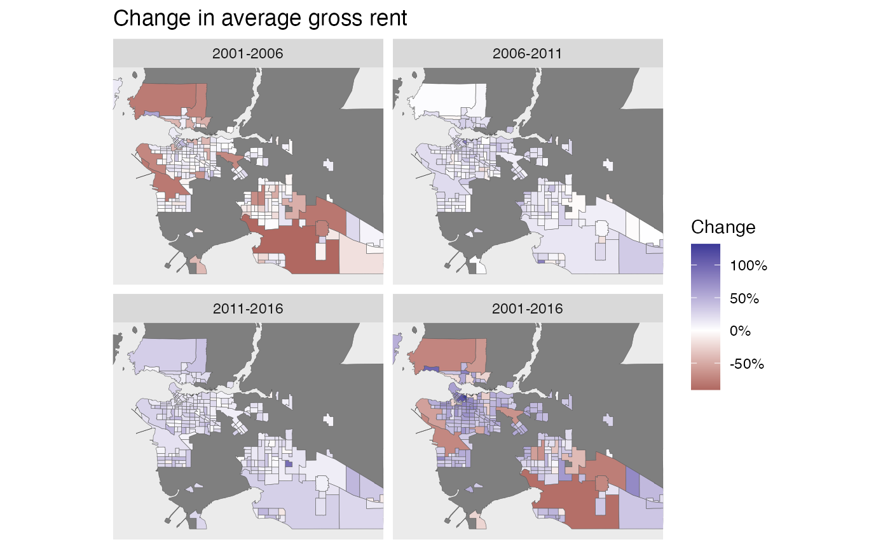
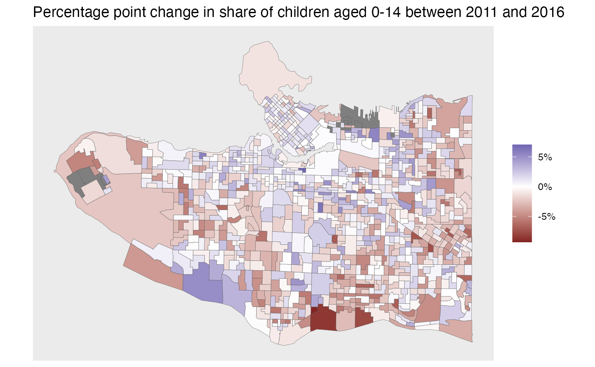

TongFen for Canadian census data
Jens von Bergmann
2026-06-04
Source:vignettes/tongfen_ca.Rmd
tongfen_ca.Rmd
library(dplyr)
library(ggplot2)
library(tidyr)
library(cancensus)
library(sf)
library(tongfen)
# cancensus::set_api_key("<your cancensus API key>")
rent_variables <- c(rent_2001="v_CA01_1667",rent_2016="v_CA16_4901",
rent_2011="v_CA11N_2292",rent_2006="v_CA06_2050")
meta <- meta_for_ca_census_vectors(rent_variables)
regions=list(CMA="59933")
rent_data <- get_tongfen_ca_census(regions=regions, meta=meta, quiet=TRUE,
method="estimate", level="CT", base_geo = "CA16")
periods <- c("2001-2006","2006-2011","2011-2016","2001-2016")
plot_data <- rent_data %>%
mutate(`2001-2006`=rent_2006/rent_2001-1,
`2006-2011`=rent_2011/rent_2006-1,
`2011-2016`=rent_2016/rent_2011-1,
`2001-2016`=rent_2016/rent_2001-1) %>%
pivot_longer(cols = all_of(periods),
names_to="Period",values_to="Change") %>%
mutate(Period=factor(Period,level=periods)) %>%
st_sf()
ggplot(plot_data,aes(fill=Change)) +
geom_sf(size=0.1) +
scale_fill_gradient2(labels=scales::percent) +
coord_sf(datum = NA,xlim=c(-123.3,-122.5),ylim=c(49,49.42)) +
facet_wrap("Period",ncol=2) +
labs(title="Change in average gross rent")
Aggregating up data across regions
Another application is simply aggregating up variables for a selection of regions from a single census. Suppose we want to understand the share of renters in the Vancouver School District, as well as the share of renter households spending more than 30% of income on housing.
vectors <- c("v_CA16_4836","v_CA16_4838","v_CA16_4899")
meta=meta_for_ca_census_vectors(vectors) %>%
bind_rows(meta_for_additive_variables("CA16",c("Population","Dwellings","Households")))
vsb_regions <- list(CSD=c("5915022","5915803"),
CT=c("9330069.01","9330069.02","9330069.00"))
vsb <- get_census("CA16",regions=vsb_regions,vectors=meta$variable,labels="short")
vsb <- aggregate_data_with_meta(vsb, meta) %>%
mutate(Total=v_CA16_4836,Renters=v_CA16_4838,rent_poor=v_CA16_4899/100) %>%
mutate(rent_share=Renters/Total)53% of Vancouver School District households rent, 45% of which are shelter cost burdened.
Change in Vancouver children
Data can also be obtained at dissemination area level. As an example we look at the change in children aged 0 to 14 in the Vancouver School District.
variables <- c("2016_0-14"="v_CA16_4",
"2011_0-4"="v_CA11F_8","2011_5-9"="v_CA11F_11","2011_10-14"="v_CA11F_14")
meta <- meta_for_ca_census_vectors(variables) %>%
bind_rows(meta_for_additive_variables(c("CA11","CA16"),"Population"))
children_data <- get_tongfen_ca_census(regions = vsb_regions, meta = meta,
level="DA", quiet = TRUE) %>%
mutate(`2011_0-14`=purrr::reduce(select(sf::st_set_geometry(.,NULL), starts_with("2011_")), `+`)) %>%
mutate(change=`2016_0-14`/Population_CA16-`2011_0-14`/Population_CA11)
ggplot(children_data,aes(fill=change)) +
geom_sf(size=0.1) +
scale_fill_gradient2(labels=scales::percent) +
coord_sf(datum=NA) +
labs(title="Percentage point change in share of children aged 0-14 between 2011 and 2016",fill=NULL)